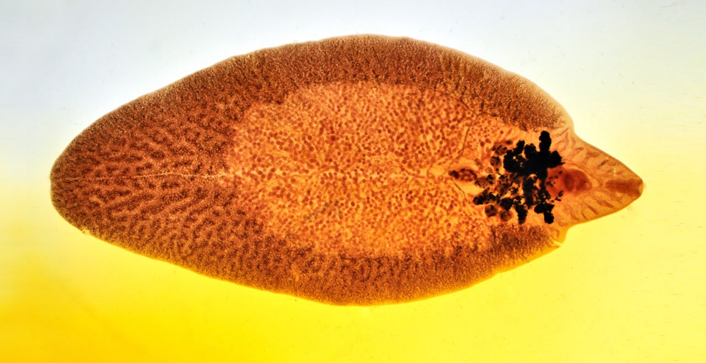

Fasciola hepatica
Duela hepática causante de la fasciolosis. Parasita los conductos biliares de herbívoros (ganado vacuno y ovino) y humanos tras la ingesta de metaceracarias en plantas acuáticas (berros).

Taxonomía Oficial
- Dominio: Eukaryota
- Reino: Animalia
- Filo: Platyhelminthes
- Clase: Trematoda
- Subclase: Digenea
- Orden: Echinostomida
- Familia: Fasciolidae
- Especie: Fasciola hepatica
Morfología del Adulto y Huevos
Estructura anatómica y características diagnósticas
Gusano Adulto
Presenta un cono cefálico prominente en el extremo anterior con ventosa oral. Ventosa ventral (acetábulo) cercana. Hermafrodita con testículos profusamente ramificados y ciegos intestinales ramificados.
Huevo Operculado
Ovalados, grandes, color pardo amarillento por tinción biliar. Poseen un opérculo claro en uno de los polos. Se eliminan embrionados o sin embrionar en la bilis y heces.
Epidemiología e Impacto Sanitario (Colombia y Latinoamérica)
Altamente prevalente en zonas ganaderas de clima frío y templado (Altiplano Cundiboyacense, Nariño, Antioquia en Colombia). Gran impacto económico en la ganadería bovina y ovina por decomiso de hígados.
Caracoles dulceacuícolas de la familia Lymnaeidae (Galba / Lymnaea truncatula, L. bogotensis). Habitan en acequias, humedales y zonas inundables de pastoreo.
Consumo de plantas acuáticas silvestres crudas (berros - Nasturtium officinale) o agua no tratada contaminada con metacercarias enquistadas libremente.